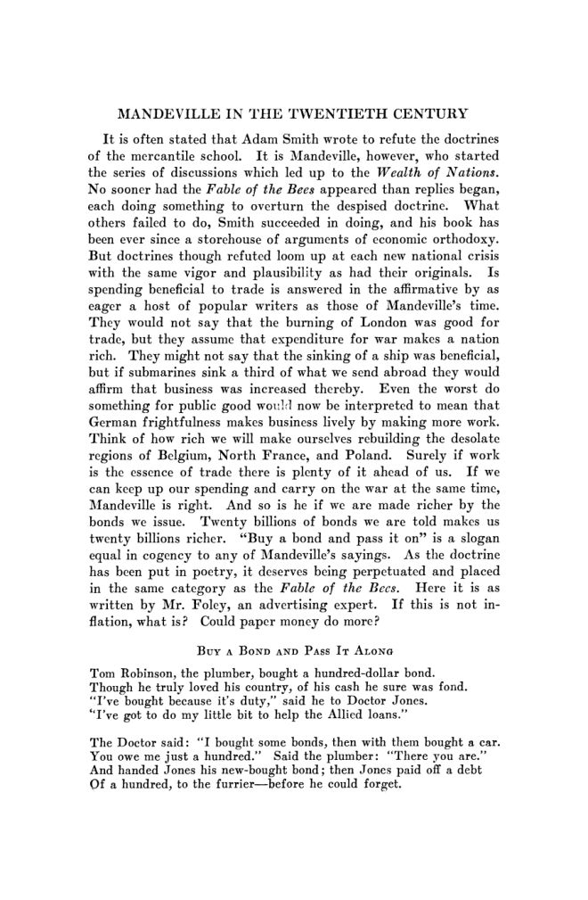

Patten, Mandeville e os títulos de guerra
Leitura: 8 min
Simon N. Patten vê na propaganda dos títulos de guerra a velha tese de Mandeville, de que gastar enriquece, e responde a Hollander e Seligman: a guerra deve ser paga com impostos e menos consumo, no presente.


Tom Robinson, encanador, compra um título de guerra de cem dólares e o usa para pagar o médico. O médico paga o peleteiro, o peleteiro o alfaiate, o alfaiate o atacadista, e o título segue de dívida em dívida, intacto no valor, até a modista que manda reformar o banheiro e o devolve ao encanador. A moral do poema, escrito por um especialista em publicidade, é que o país não pode falhar se cada um comprar um título e passá-lo adiante.
Simon N. Patten reproduz o poema na abertura de “Mandeville in the Twentieth Century”, na American Economic Review de março de 1918, e pergunta: se isso não é inflação, o que é? O poema, diz, seria ignorável se fosse só a voz da rua; mas editores, oradores, banqueiros e autoridades repetiam a mesma coisa de mil formas.
Por que Mandeville?
Costuma-se dizer que Adam Smith escreveu para refutar os mercantilistas. Para Patten, foi Mandeville quem abriu a série de discussões que terminou na Riqueza das Nações: assim que a Fábula das Abelhas apareceu, começaram as respostas, e Smith completou o que os outros tentaram. Mas doutrinas refutadas, diz o autor, voltam com o mesmo vigor a cada crise nacional. Ninguém afirmaria que o incêndio de Londres fez bem ao comércio; em 1918, porém, muitos supunham que a despesa de guerra enriquecia a nação e que vinte bilhões em títulos a tornavam vinte bilhões mais rica.
“Exaltamos o título e evitamos o imposto.” (“We extol the bond and avoid the tax.”)
Patten liga essa crença ao dito de Jay Cooke, na Guerra Civil, de que a dívida nacional era uma bênção nacional, e diz que ela encontrava eco entre economistas. Atribui o eco a duas causas: os economistas têm as mesmas emoções dos outros e buscam um compromisso entre sentimento e princípio; e não estão livres de viés de classe, o que faz da discussão sobre tributação, em sua visão, uma defesa da isenção tributária.
O que é inflação para Patten?
O primeiro interlocutor é J. H. Hollander, que atribuíra a Pigou, em 1916, a primeira formulação explícita da resistência ao financiamento por dívida na guerra. Patten responde com Thomas Chalmers, que em 1808 escrevera que, se fosse ministro, tributaria o país até a medida plena das necessidades públicas. A tese, lembra, foi retomada por Mill em sua terceira proposição sobre o capital.
Patten recusa discutir os pressupostos da teoria quantitativa da moeda e propõe uma definição operacional, que dispensa essa teoria e pode ser testada com fatos: se as pessoas estão de fato poupando o equivalente aos títulos, se os títulos ainda estão nos bancos ou já com o público investidor.
“Inflação é uma superestimação do poder presente de consumir.” (“Inflation is an overestimate of present powers to consume.”)
Em seus termos, é uma alta de preços sem alta correspondente dos custos físicos de produção. Ele encontra muitos sinais de valores crescentes e nenhum de aumento desses custos: a eficiência do trabalho nunca fora tão alta. Os itens que conseguiu conferir indicavam aumento, e não redução, do consumo.
Quem paga a guerra, o presente ou o futuro?
O segundo interlocutor é E. R. A. Seligman, que admitia que os custos objetivos da guerra recaem sobre o presente, mas sustentava que parte dos custos subjetivos podia ser adiada. Patten responde que o subjetivo é psicologia, útil enquanto faltam dados objetivos, e que nesse caso os dados existem. Para tornar a questão resolúvel, define o presente como o período em que os atuais proprietários arcam com os encargos, a guerra ou os próximos dois ou três anos, e o futuro como o tempo, vinte anos ou mais adiante, em que a geração seguinte assume os impostos.
Os exemplos de Seligman, a reposição adiada do capital e a sobrecarga do trabalhador, provam o contrário, diz Patten. As ferrovias pouparam na renovação do material rodante e agora impunham ao presente um ônus pesado, visível nos preços altos. A experiência da guerra mostrava que a jornada precisa ser encurtada e as condições de trabalho melhoradas para obter a eficiência máxima. O presente deve, portanto, cortar o consumo além do gasto militar, para ampliar o capital fixo e cuidar melhor do trabalho.
O que é crédito legítimo?
O crédito, para Patten, nasce do intervalo entre o momento em que o trabalho é feito e o momento em que o produto é consumido, e das sazonalidades dos negócios. As duas formas são úteis e curtas: o crédito bancário legítimo é o de papéis comerciais até noventa dias, e o de longo prazo deveria ser proibido aos bancos. Notas do Tesouro de prazo curto são aceitáveis se resgatadas no vencimento; títulos longos prendem o dinheiro do consumidor.
Contra a afirmação de Seligman de que todo crédito repousa num substrato de dinheiro, Patten inverte a relação: o dinheiro é que repousa no crédito. Os depósitos crescem quando o consumidor adia gastos, não quando se endivida; as reservas bancárias são efeito, e não causa, do crédito. Por isso, quem promove o consumo excessivo não é o banqueiro, mas a publicidade e a imprensa, que levam o consumidor a se julgar mais rico do que é.
Quanto custa financiar a guerra com títulos?
O problema, como Patten o formula, é saber como uma nação com excedente anual de três bilhões de dólares pode gastar dez bilhões num ano. A única resposta é reduzir o consumo diário na medida do excesso do gasto sobre o excedente. Se a despesa for de sete bilhões, o consumo deve cair sete bilhões, e a poupança, ir ao governo: a conta fecha a cada ano e a guerra é paga uma só vez.
Pela via dos títulos, o governo provoca ou tolera a alta de preços, que eleva os lucros, e toma emprestado dos que lucraram. Dez bilhões, diz Patten, ficaram pelo caminho, e ele cita a estimativa de que cinco bilhões permaneciam nas empresas como dividendos não declarados. A guerra seria paga ao menos três vezes: pelo consumidor, pelo capitalista e, no vencimento dos títulos, de novo.
O que Patten propõe?
O programa tem dois pontos. O primeiro é admitir que a nação pode pagar a guerra de uma só vez, por impostos. O segundo é oferecer juros mais altos: a taxa de 4% seria alta demais como bônus a quem lucra com a despesa de guerra e baixa demais para despertar a poupança em quem gasta tudo o que ganha. Nenhuma parte do argumento de Seligman, conclui, justifica a afirmação de que pagar a guerra integralmente com impostos seria suicida.
Na minha leitura
Na minha leitura, o interesse do artigo está menos na polêmica do que na definição de inflação. Patten a separa da teoria quantitativa e a liga a um teste observável: os preços sobem mais que os custos físicos de produção, e o consumo não cai na medida do gasto público. Com isso, a pergunta sobre títulos ou impostos deixa de ser sobre a forma do financiamento e passa a ser sobre quem reduz o consumo, quando e por qual mecanismo.
O método também chama atenção pela escolha dos interlocutores. Patten não responde à propaganda, mas a Hollander e a Seligman, e em cada caso desloca a discussão para uma pergunta empírica: se a poupança acompanha as emissões, se o consumo caiu, quanto os preços agrícolas subiram. A estrutura do raciocínio, a de que a guerra é paga com bens do presente e que a dívida define quem terá direito ao reembolso, é o ponto de partida da discussão sobre o financiamento de gastos extraordinários.
Glossário
- Fábula das Abelhas
- obra de Bernard Mandeville que sustenta que os vícios privados, como o gasto de luxo, produzem benefícios públicos.
- Títulos da Liberdade (Liberty Bonds)
- títulos emitidos pelo governo americano para financiar a Primeira Guerra Mundial.
- Teoria quantitativa da moeda
- teoria segundo a qual o nível de preços varia com a quantidade de moeda em circulação.
- Custos subjetivos
- sacrifícios medidos pela percepção de quem os sofre, em oposição a bens e serviços efetivamente consumidos.
- Papel comercial
- título de crédito de curto prazo emitido para financiar operações correntes de comércio.
- Excedente nacional
- parte da produção anual que excede o consumo corrente.
Fontes
- Mandeville in the Twentieth Century — Simon N. Patten (pp. 88–98). JSTOR · Internet Archive (PDF)
- Edição completa, com os demais artigos: Nº 150 do Arquivo.
Documento em domínio público (EUA, publicado antes de 1931), via JSTOR Early Journal Content e Internet Archive. Resumo e comentário do autor deste site, sem afiliação com a American Economic Association. Encontrou um erro? Escreva: a correção é publicada no próprio texto, com data.
← Duffus e o controle federal do trigo em 1917 ↑ Nº 150 · O mercado da Califórnia, o trigo de Hoover e a fábula de Mandeville